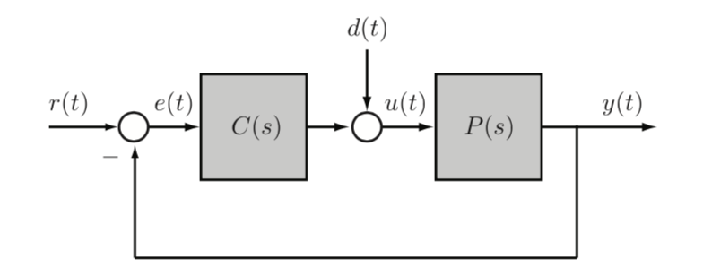

5 Feedback control theory
Back to UWaterloo
- analyzing existing controlers, in the frequency domain
- noise is all frequencies
- unstable pole-zero cancellation
Stability of feedback systems

- system has 6 transfer funcitons from \((r,d) \times (e, u, y)\)
Definition: The feedback system is input-output stable if e,u, y are bounding signals whenever exogenous inputs are bounded (all transfer functions are BIBO stable)
- notice in ex 5.2.5 since there are poles, D to E is not stable, so not I/O stable
- when connecting our plant to the controller, P can cancel poles to achieve stability
We could try to find every possible transfer function in a system, but we want a way to test stability without
Definition: the characteristic polynomial of the feedback system is \(\pi(s) := N_p N_c + D_p D_c\) is the denominator of the four transfer functions from (r,d) to (e,u)
- if we want to check IO stability, we just need to look at this polynomial!